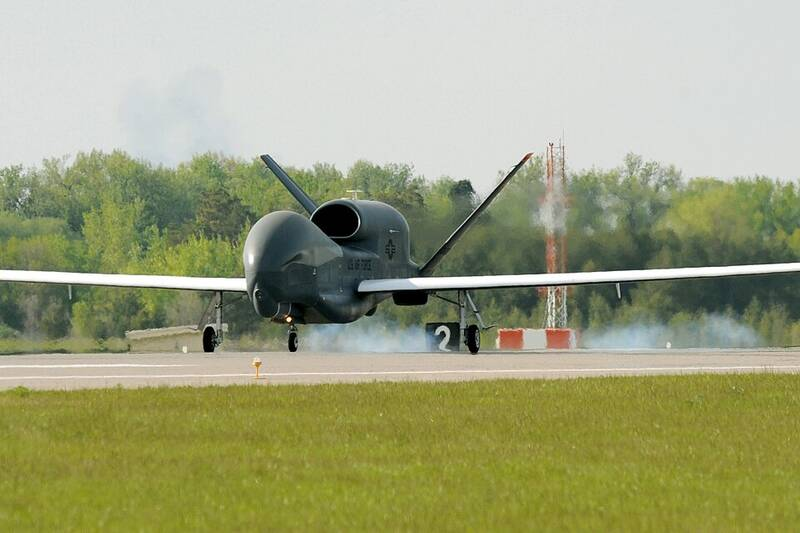

Grand Forks AFB North Dakota North Dakota · Military base · 47.961°N, 97.398°W The first RQ-4 Global Hawk to arrive at Grand Forks, 2011. Photo: Johnny Saldivar, U.S. Air Force, Public domain (source) Air Force drone and ISR base. 1 Open in the interactive Watcher Sources Grand Forks Air Force Base Wikipedia